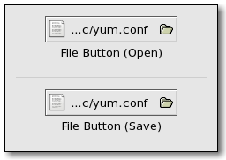

| GTK+ Reference Manual |
|---|
GtkFileChooserButtonGtkFileChooserButton — A button to launch a file selection dialog |  |
#include <gtk/gtk.h>
GtkFileChooserButton;
GtkWidget* gtk_file_chooser_button_new (const gchar *title,
GtkFileChooserAction action);
GtkWidget* gtk_file_chooser_button_new_with_backend
(const gchar *title,
GtkFileChooserAction action,
const gchar *backend);
GtkWidget* gtk_file_chooser_button_new_with_dialog
(GtkWidget *dialog);
const gchar* gtk_file_chooser_button_get_title
(GtkFileChooserButton *button);
void gtk_file_chooser_button_set_title
(GtkFileChooserButton *button,
const gchar *title);
gint gtk_file_chooser_button_get_width_chars
(GtkFileChooserButton *button);
void gtk_file_chooser_button_set_width_chars
(GtkFileChooserButton *button,
gint n_chars);
GObject +----GtkObject +----GtkWidget +----GtkContainer +----GtkBox +----GtkHBox +----GtkFileChooserButton
"dialog" GtkFileChooserDialog : Write / Construct Only "title" gchararray : Read / Write "width-chars" gint : Read / Write
The GtkFileChooserButton is a widget that lets the user select a file. It implements the GtkFileChooser interface. Visually, it is a file name with a button to bring up a GtkFileChooserDialog. The user can then use that dialog to change the file associated with that button. This widget does not support setting the "select-multiple" property to TRUE.
Example 5. Create a button to let the user select a file in /etc
{
GtkWidget *button;
button = gtk_file_chooser_button_new (_("Select a file"),
GTK_FILE_CHOOSER_ACTION_OPEN);
gtk_file_chooser_set_current_folder (GTK_FILE_CHOOSER (button),
"/etc");
}
The GtkFileChooserButton supports the GtkFileChooserActions GTK_FILE_CHOOSER_ACTION_OPEN and GTK_FILE_CHOOSER_ACTION_SELECT_FOLDER.
The GtkFileChooserButton will ellipsize the label, and thus will thus request little horizontal space. To give the button more space, you should call gtk_widget_size_request(), gtk_file_chooser_button_set_width_chars(), or pack the button in such a way that other interface elements give space to the widget.
typedef struct _GtkFileChooserButton GtkFileChooserButton;
This should not be accessed directly. Use the accessor functions below.
GtkWidget* gtk_file_chooser_button_new (const gchar *title, GtkFileChooserAction action);
Creates a new file-selecting button widget.
| title : | the title of the browse dialog. |
| action : | the open mode for the widget. |
| Returns : | a new button widget. |
Since 2.6
GtkWidget* gtk_file_chooser_button_new_with_backend (const gchar *title, GtkFileChooserAction action, const gchar *backend);
Creates a new file-selecting button widget using backend.
| title : | the title of the browse dialog. |
| action : | the open mode for the widget. |
| backend : | the name of the GtkFileSystem backend to use. |
| Returns : | a new button widget. |
Since 2.6
GtkWidget* gtk_file_chooser_button_new_with_dialog (GtkWidget *dialog);
Creates a GtkFileChooserButton widget which uses dialog as it's file-picking window. Note that dialog must be a GtkFileChooserDialog (or subclass).
| dialog : | the GtkFileChooserDialog widget to use. |
| Returns : | a new button widget. |
Since 2.6
const gchar* gtk_file_chooser_button_get_title (GtkFileChooserButton *button);
Retrieves the title of the browse dialog used by button. The returned value should not be modified or freed.
| button : | the button widget to examine. |
| Returns : | a pointer to the browse dialog's title. |
Since 2.6
void gtk_file_chooser_button_set_title
(GtkFileChooserButton *button,
const gchar *title);Modifies the title of the browse dialog used by button.
| button : | the button widget to modify. |
| title : | the new browse dialog title. |
Since 2.6
gint gtk_file_chooser_button_get_width_chars (GtkFileChooserButton *button);
Retrieves the width in characters of the button widget's entry and/or label.
| button : | the button widget to examine. |
| Returns : | an integer width (in characters) that the button will use to size itself. |
Since 2.6
void gtk_file_chooser_button_set_width_chars
(GtkFileChooserButton *button,
gint n_chars);Sets the width (in characters) that button will use to n_chars.
| button : | the button widget to examine. |
| n_chars : | the new width, in characters. |
Since 2.6
"dialog" GtkFileChooserDialog : Write / Construct Only
Instance of the GtkFileChooserDialog associated with the button.
Since 2.6
"title" gchararray : Read / Write
Title to put on the GtkFileChooserDialog associated with the button.
Default value: "Select A File"
Since 2.6
"width-chars" gint : Read / Write
The width of the entry and label inside the button, in characters.
Allowed values: >= -1
Default value: -1
Since 2.6
| << GtkFileChooser | GtkFileChooserDialog >> |